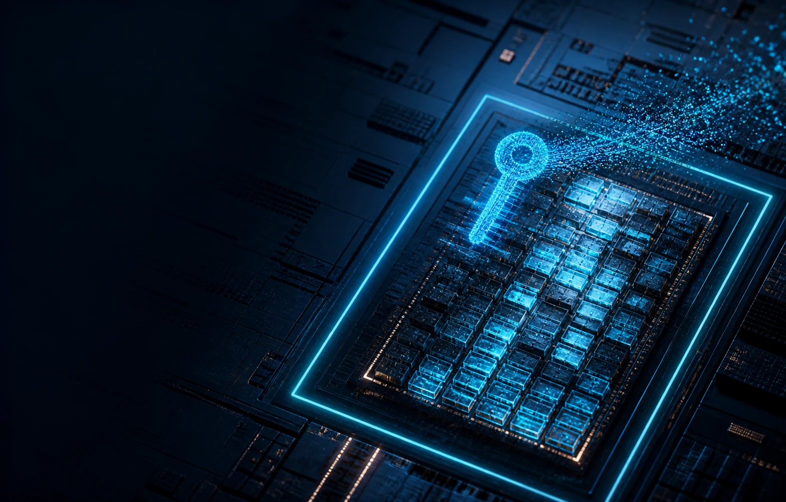
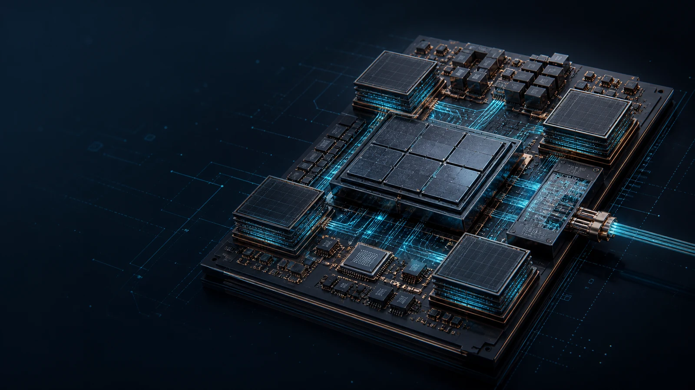

Technology Family
OTP、MTP、eFlash、MRAM、ReRAM 與 PUF 的能力邊界
NVM KNOWLEDGE ARCHITECTUREPUBLIC EDITION · 2026
以非揮發性記憶體為知識主軸，連接 Secure Storage、AI Systems 與可追溯的決策工具。 From memory technology to application context, evidence, and transferable knowledge.

NVM KNOWLEDGE SPINE
首頁只負責建立全貌；完整內容、來源與限制由 NVM Knowledge Hub 維護，避免多個入口各自形成不同版本。
OTP、MTP、eFlash、MRAM、ReRAM 與 PUF 的能力邊界
保存什麼、何時可讀、由誰更新，以及 power-off 後留下什麼
把 memory primitive 放入安全、AI、power 與 system lifecycle
分開公開事實、工程推論、限制與待驗證內容
APPLICATION LENSES
不是兩座分離的網站，而是以不同 system pressure 檢視相同的 persistent-state 問題。

LENS 01SECURITY · IDENTITY · LIFECYCLE

LENS 02AI PACKAGE · CALIBRATION · POLICY
兩張場景圖皆為概念性 silicon-IP artwork，用於表達應用邊界，不代表實際產品 floorplan 或經驗證的 physical topology。
CROSS-TOPIC WORKBENCH
把研究內容轉成可以閱讀、比較、治理與移轉的決策資產。它服務整個 NVM knowledge spine，而不是第三個應用主題。
ENTERPRISE TRANSFER
目前公開版先建立治理語言與 portability；進入公司 SharePoint 後，再由 owner 補上內部來源、權限與 confidential context。
公開內容維持可追溯的 evidence boundary，避免把工程推論寫成已驗證事實。
尚未連接公司 SharePoint、Copilot 或 confidential data；此處只描述 transfer model。
OTHER PUBLIC WORK
保留可執行作品與工具，但不與 NVM knowledge platform 爭奪主視覺層級。